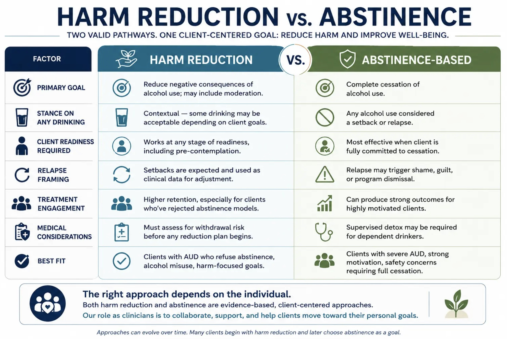

The main principal of harm reduction is to meet patients where they are at. It involves ensuring that those who continue to use substances are able to do it in a safe manner. The idea is that we understand illicit drug use will likely always be a part of our world and that we should minimize harmful effects rather than ignore the problem entirely. This also often opens up a level of communication between a patient using harm reduction resources to eventually trust and work with health care professionals later on if/when they want to abstain from a substance entirely.
Providers who service these communities are often non-judgemental. Their goals are often to better the quality of life and well-being or these patients. They also tend to understand that methods that work for some people do not work for others and that some ways of using drugs are safer than others. It is also important to acknowledge that external factors such as economic status, race, violent trauma, discrimination, and other inequalities often affect someone's vulnerability to addiction and ability to recover from substance use. External environments and biology both play a factor in how likely a person is to develop a substance use disorder as well as recover from it. And it is the role of healthcare professionals to help them navigate recovery despite this combination of internal and external factors.

Example values for three harm reduction approaches (not real statistics).